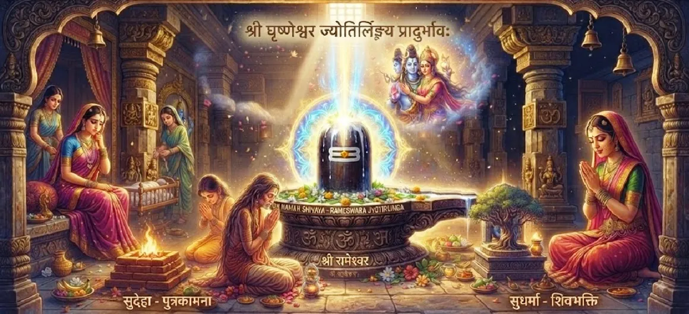

घुश्मेश्वर ज्योतिर्लिंग की उत्पत्ति
कोटिरुद्र संहिता के चौंतीसवें अध्याय में बारहवें और अंतिम ज्योतिर्लिंग घुश्मेश्वर की चमत्कारी अभिव्यक्ति और सर्वोच्च आध्यात्मिक महिमा का पता चलता है।
सुधर्मा और सुदेहा की कथा सूत्र को समाप्त करते हुए, यह अध्याय दर्शाता है कि कैसे अटूट भक्ति और दैवीय कृपा महादेव की शाश्वत उपस्थिति में परिणत होती है।
यह क्षमा, उपचार और मुक्ति का एक अमर अभयारण्य है।
अध्याय 34 की मुख्य बातें
बारहवाँ ज्योतिर्लिंग
घुश्मेश्वर का पवित्र प्राकट्य।
घुश्मा की भक्ति
भक्त की असीम भक्ति और पवित्रता.
दिव्य स्वरूप
भगवान शिव की चमत्कारी शारीरिक अभिव्यक्ति।
कर्म संकल्प
दुःख का निवारण और पारिवारिक संकटों का समाधान।
शाश्वत आशीर्वाद
यहां पूजा करने वाले सभी लोगों के लिए अनुग्रह का वादा।
परम मोक्ष
घुश्मेश्वर में परम मुक्ति की प्राप्ति।
इस अध्याय में मुख्य विषय
- 01घुश्मा की भक्ति की पराकाष्ठा→
- 02भगवान शिव का चमत्कारी स्वरूप→
- 03घुश्मेश्वर तीर्थ की स्थापना→
- 04दुःख और कर्म संघर्ष का समाधान→
- 05महादेव द्वारा दिया गया दिव्य वरदान→
- 06बारहवें ज्योतिर्लिंग का महत्व→
- 07घुश्मेश्वर की पूजा की उपचार शक्ति→
- 08शाश्वत आनंद और मोक्ष की प्राप्ति→
- 09ज्योतिर्लिंग चक्र का समापन→
- 10अध्याय 35 की ओर →
घुश्मा की भक्ति की पराकाष्ठा
घुश्मा (पूर्व में सुदेहा की बहन/मुकदमे में साथी) के गहन दुःख, क्षमा और अटूट भक्ति से प्रभावित होकर, भगवान शिव अपने सर्वोच्च रूप को प्रकट करने के लिए तैयार होते हैं।
उसका शुद्ध प्रेम वाला हृदय दैवीय कृपा के लिए चुंबक बन जाता है।
भगवान शिव का चमत्कारी स्वरूप
अंधी लेकिन सुखदायक चमक के साथ फूटते हुए, भगवान शिव घुश्मा और सभी इकट्ठे लोगों के सामने प्रकट हुए, और उसके दुःख और पीड़ा के हर निशान को कम किया।
उनकी दिव्य उपस्थिति वातावरण को अलौकिक शांति से भर देती है।
घुश्मेश्वर तीर्थ की स्थापना
भक्त की गंभीर प्रार्थना पर, भगवान शिव उसी स्थान पर घुश्मेश्वर ज्योतिर्लिंग के रूप में स्थायी रूप से स्थापित हो जाते हैं, और भक्त का नाम अमर हो जाता है।
इस प्रकार, प्रकाश का बारहवां स्तंभ मानवता के लिए स्थायी रूप से सुलभ हो जाता है।
दुःख और कर्म संघर्ष का समाधान
घुश्मेश्वर की कृपा से, पिछली सभी गलतफहमियाँ, पारिवारिक दुःख और कर्म का बोझ तुरंत दूर हो जाता है, जिससे सद्भाव और दिव्य प्रेम बहाल हो जाता है।
क्षमा और ईश्वरीय दया सभी घावों को भर देती है।
महादेव द्वारा दिया गया दिव्य वरदान
भगवान शिव ने घुश्मा को गहन वरदान देते हुए कहा कि जो कोई भी इस मंदिर की भक्तिपूर्वक पूजा करेगा, उसकी इच्छाएं पूरी होंगी और उसे मुक्ति मिलेगी।
यह मंदिर अनंत आध्यात्मिक पुरस्कारों का स्रोत बन जाता है।
बारहवें ज्योतिर्लिंग का महत्व
कोटिरुद्र संहिता में वर्णित बारह प्राथमिक ज्योतिर्लिंगों में से अंतिम के रूप में, घुश्मेश्वर तीर्थयात्रा और मंत्र ध्यान में सर्वोच्च स्थान रखता है।
यह शिव पूजा के पवित्र भौगोलिक और आध्यात्मिक मानचित्र को पूरा करता है।
घुश्मेश्वर की पूजा की उपचार शक्ति
धर्मग्रंथ इस बात पर प्रकाश डालता है कि घुश्मेश्वर में सच्चे मन से पूजा करने से मानसिक पीड़ा दूर होती है, शत्रुतापूर्ण प्रभाव शांत होते हैं और परेशान घरों में शांति आती है।
शिव का उपचारात्मक स्पर्श भावनात्मक संतुलन बहाल करता है।
शाश्वत आनंद और मोक्ष की प्राप्ति
जो भक्त घुश्मेश्वर में शरण लेते हैं, वे जन्म और मृत्यु के चक्र को पार कर जाते हैं, और प्रलय के समय महादेव की चमकदार चेतना में विलीन हो जाते हैं।
उनकी परम कृपा से पूर्ण मुक्ति सुनिश्चित है।
ज्योतिर्लिंग चक्र का समापन
घुश्मेश्वर की अभिव्यक्ति के साथ, कोटिरुद्र संहिता के भीतर सभी बारह ज्योतिर्लिंगों की व्याख्या अपनी शानदार परिणति पर पहुंचती है।
पवित्र रोशनी के माध्यम से दिव्य यात्रा पूरी तरह से साकार होती है।
अध्याय 35 की ओर
घुश्मेश्वर ज्योतिर्लिंग की उत्पत्ति का खुलासा करने के बाद, कथा अध्याय 35 में यह बताने के लिए आगे बढ़ती है कि भगवान विष्णु को दिव्य सुदर्शन चक्र कैसे प्राप्त होता है।
पाठकों को अध्याय 35 जारी रखने के लिए आमंत्रित किया जाता है।
अध्याय 34 की मुख्य शिक्षाएँ
बारहवाँ तीर्थ
बारह ज्योतिर्लिंगों का समापन।
शुद्ध भक्ति
अटूट भक्ति प्रत्यक्ष दिव्य अभिव्यक्ति को आकर्षित करती है।
ईश्वरीय कृपा
शिव का प्रकाश सभी दुखों और कर्म ऋणों को दूर कर देता है।
शाश्वत शरण
घुश्मेश्वर पूर्ण सुरक्षा और शांति प्रदान करता है।
पारिवारिक सद्भाव
प्रार्थना के माध्यम से संबंधपरक कलह का उपचार।
परम मोक्ष
महादेव की चेतना में अंतिम मुक्ति।
आध्यात्मिक चिंतन
घुश्मेश्वर ज्योतिर्लिंग की अभिव्यक्ति शुद्ध, क्षमाशील और निःस्वार्थ भक्ति की शक्ति का एक स्मारकीय प्रमाण है। बारह ज्योतिर्लिंगों की पवित्र सूची में अंतिम मंदिर के रूप में, घुश्मेश्वर शिव पुराण के सार को समाहित करता है: मानव परीक्षण, दुःख या उलझाव की गहराई से कोई फर्क नहीं पड़ता, सर्वोच्च भगवान की ओर ईमानदारी से मुड़ने से सभी अंधकार दूर हो जाते हैं। जब भगवान शिव घुश्मा का सम्मान करने के लिए ज्वलंत चमक में प्रकट हुए, तो उन्होंने सभी भटकती आत्माओं को आशा, उपचार और मुक्ति की एक शाश्वत किरण प्रदान करते हुए, भौतिक स्तर पर अपनी उपस्थिति को स्थायी रूप से अंकित कर दिया।
अध्याय 34 का संदेश जीना
अपने आध्यात्मिक अभ्यास में घुश्मा की पवित्रता को प्रतिबिंबित करते हुए, क्षमा और गहरी भक्ति का हृदय विकसित करें।
भरोसा रखें कि महादेव की कृपा हमेशा सक्रिय रहती है, जो आपके परीक्षणों को आध्यात्मिक जागृति और परम शांति के अवसरों में बदल देती है।
अपनी चेतना को परमेश्वर के शाश्वत प्रकाश में विश्राम दें।
प्रमुख आध्यात्मिक अवधारणाएँ
संहिता में प्रकाश का अंतिम और समापन पवित्र तीर्थस्थल।
शुद्ध भक्ति की प्रतिक्रिया में शिव का भौतिक स्वरूप।
अनुग्रह के माध्यम से दुःख और पारिवारिक दुःख को दूर करना।
दिव्य मंदिर में भक्त के नाम का शाश्वत होना।
प्रार्थना के माध्यम से भावनात्मक और आध्यात्मिक संतुलन बहाल करना।
महादेव की उज्ज्वल चेतना में विलीन हो जाना।
अध्याय सारांश
कोटिरुद्र संहिता अध्याय 34 में बारहवें ज्योतिर्लिंग घुश्मेश्वर की भव्य उत्पत्ति और दिव्य अभिव्यक्ति का विवरण दिया गया है। घुश्मा की शुद्ध भक्ति का जवाब देकर, भगवान शिव सभी कर्म दुखों का समाधान करते हैं, अपने शाश्वत मंदिर की स्थापना करते हैं, और सर्वोच्च मुक्ति प्रदान करते हैं। यह बारह ज्योतिर्लिंगों के पवित्र अनुक्रम का समापन करता है, अध्याय 35 के लिए कथा तैयार करता है, जहां विष्णु को सुदर्शन चक्र प्राप्त होता है।
अक्सर पूछे जाने वाले प्रश्न
1. कोटिरुद्र संहिता अध्याय 34 का केंद्रीय विषय क्या है?
अध्याय 34 में भगवान शिव के बारहवें और अंतिम ज्योतिर्लिंग घुश्मेश्वर की चमत्कारी उत्पत्ति और दिव्य अभिव्यक्ति का विवरण दिया गया है।
2. अध्याय 34 पिछले अध्याय से कैसे जुड़ता है?
सुधर्मा और सुदेहा की कहानी में खोजे गए नैतिक और कार्मिक परीक्षणों के आधार पर, अध्याय 34 भगवान शिव की प्रत्यक्ष कृपा और उपस्थिति के माध्यम से कथा का समाधान करता है।
3. घुश्मेश्वर ज्योतिर्लिंगों में क्यों महत्वपूर्ण है?
घुश्मेश्वर बारहवें ज्योतिर्लिंग के रूप में प्रतिष्ठित हैं, जो प्रकाश के पवित्र चक्र को पूरा करते हैं और भक्तों को परम करुणा और मुक्ति प्रदान करते हैं।
4. घुश्मेश्वर की पूजा के प्राथमिक आध्यात्मिक लाभ क्या हैं?
घुश्मेश्वर की पूजा करने से सभी कर्म संबंधी दुख दूर हो जाते हैं, पारिवारिक कलह दूर हो जाते हैं, असीम भक्ति मिलती है और शाश्वत शांति मिलती है।
5. इस अध्याय में कौन सी कथा वर्णित है?
कथा अध्याय 35 में परिवर्तित होती है, 'विष्णु को सुदर्शन चक्र प्राप्त होता है'।
6. घुश्मा की भक्ति पर भगवान शिव की क्या प्रतिक्रिया थी?
उनकी अटूट भक्ति और हृदय की पवित्रता से प्रभावित होकर, भगवान शिव सशरीर प्रकट हुए और घुश्मेश्वर ज्योतिर्लिंग के रूप में अपनी शाश्वत उपस्थिति स्थापित की।
"घुश्मेश्वर ज्योतिर्लिंग की दिव्य अभिव्यक्ति प्रकाश के पवित्र चक्र को पूरा करती है, जो सभी भक्तों को शाश्वत कृपा, उपचार और पूर्ण मुक्ति प्रदान करती है।"
कोटिरुद्र संहिता के माध्यम से जारी रखें
अध्याय 34 घुश्मेश्वर ज्योतिर्लिंग की उत्पत्ति का पता लगाता है। अध्याय 35 तक जारी रखें, विष्णु को सुदर्शन चक्र प्राप्त होता है।